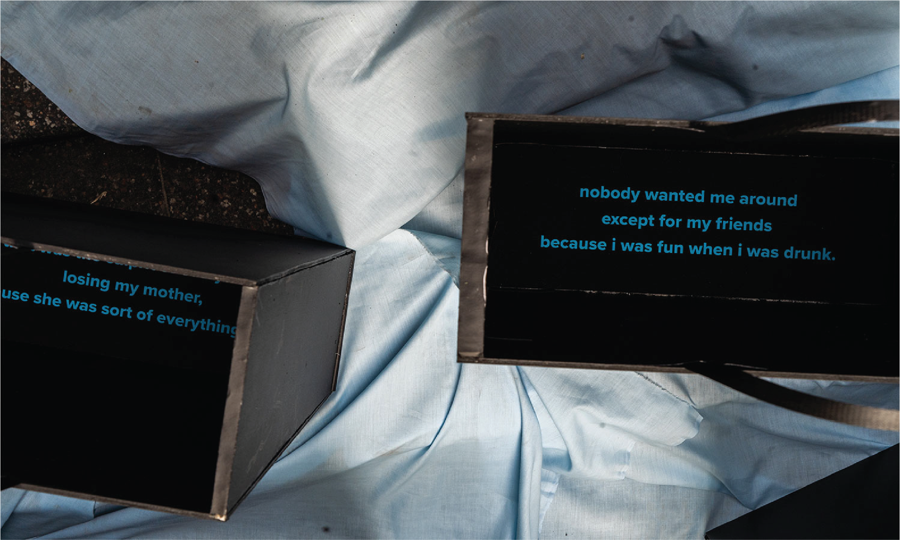
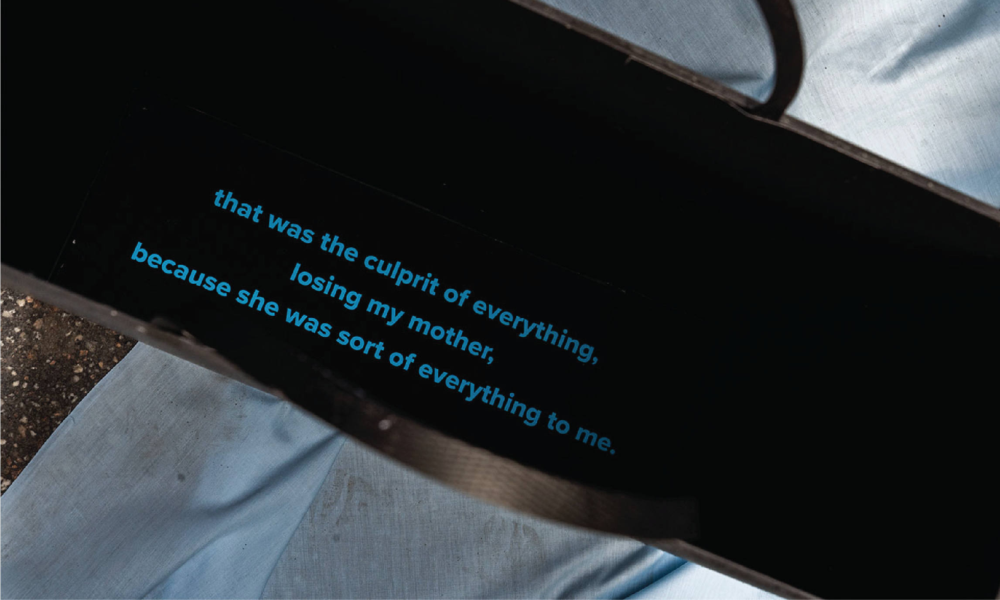
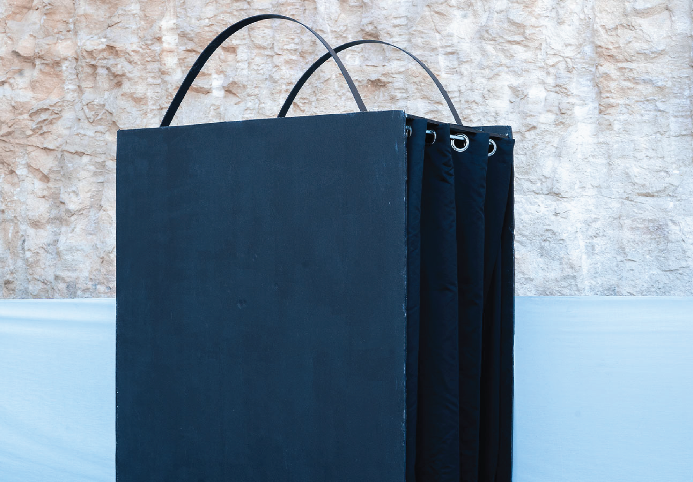
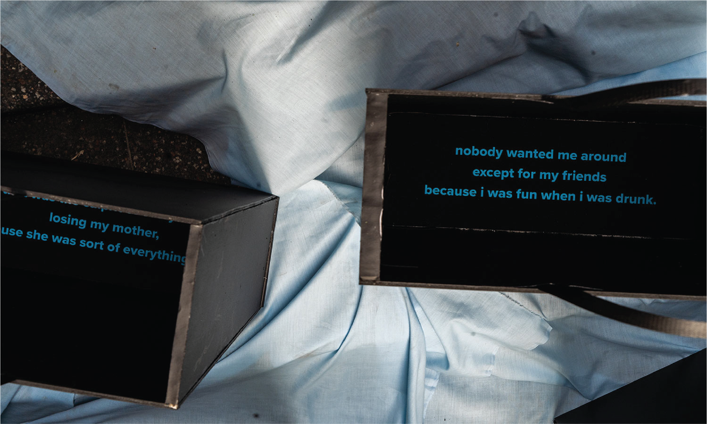
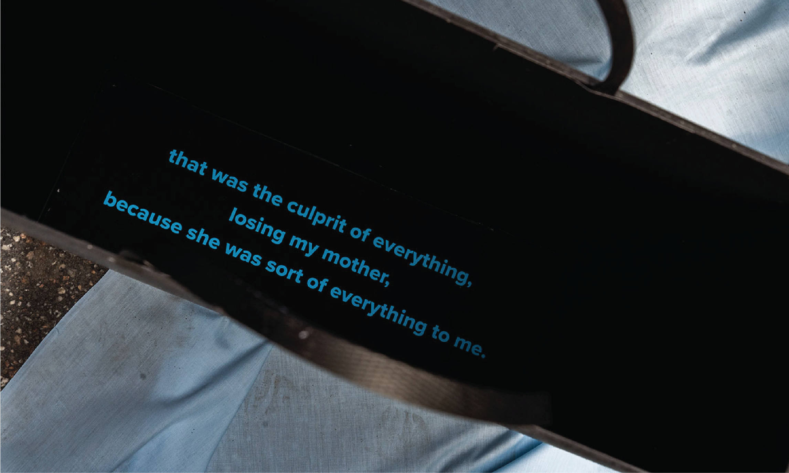
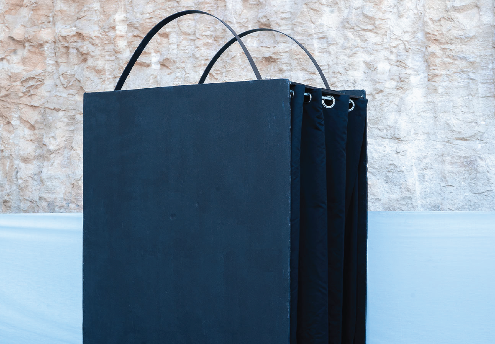
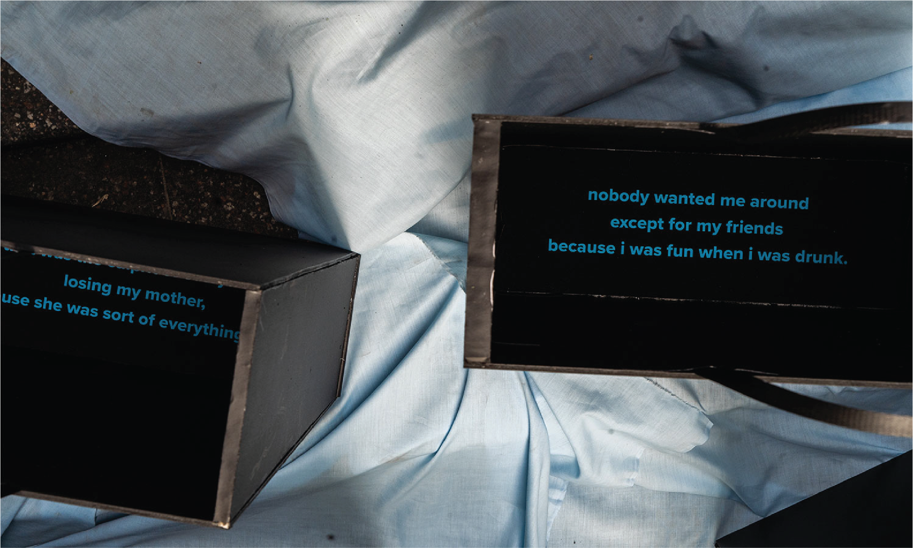
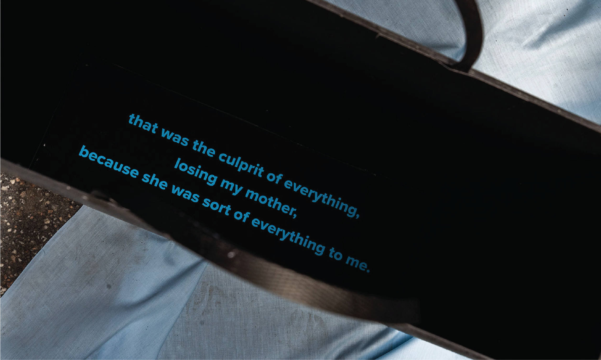
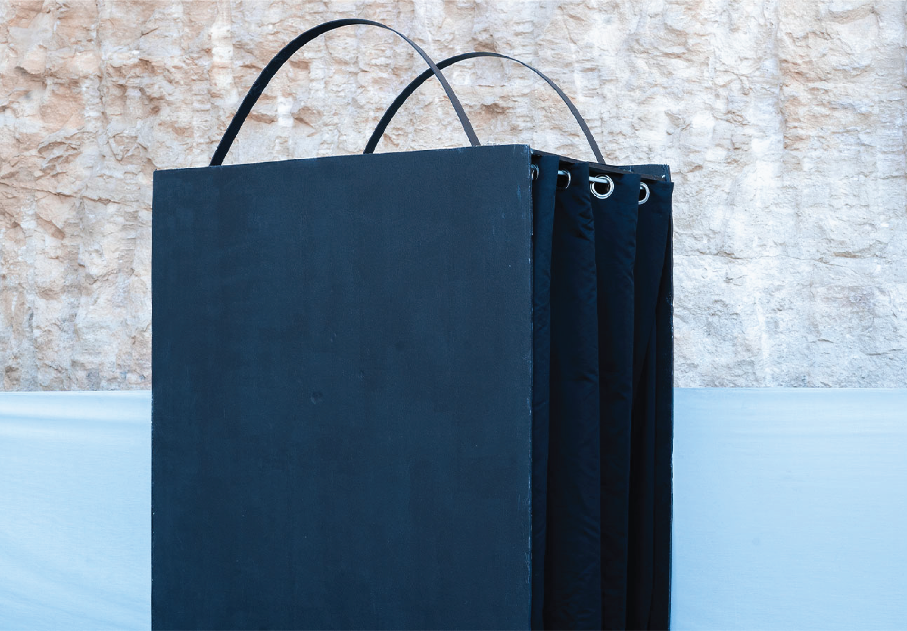

“paper bags.” is a series of installations based on Lisa’s experience of homelessness. The three
installations display aspects of her personal experience, as a set of events led to her storing all her
belongings in paper bags. The presentation of her narrative reflects the importance of exposing individual
experiences as opposed to viewing the homeless merely as numbers. These installations seek to encourage
viewers to interact with the pieces in order to take action and fight the apathy and distance often
associated with interacting with the homeless.
self. features 5 papers bags with a distorted message, only visible from one vantage point.
loss. presents a large paper bag structure where viewers crouch down in the dark to listen to the audio
excerpts.
abuse. showcases a number of verbatim phrases that depict fragments from Lisa’s experience, printed inside
paper bags. It is up to the viewer to peer inside and piece together the narrative.


